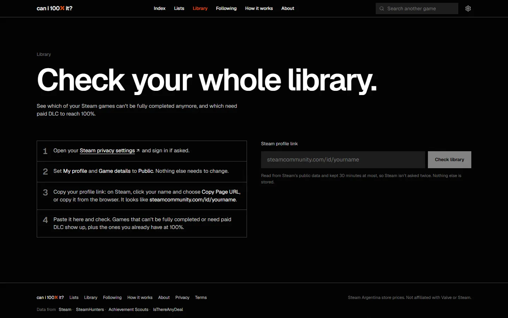

Una pregunta que parece simple y casi nunca lo es: ¿todavía se puede?
Investigar un juego antes de jugarlo lleva más que jugarlo
Para saber si un juego se puede completar al 100% hay que cruzar la tienda de Steam, bases de datos de cazadores de logros, foros y guías. Y muchas veces la respuesta es no.
Hay servidores que se apagaron, logros con bugs, logros que se pierden para siempre si te equivocás de decisión y otros que solo existen dentro de un DLC pago.
Escribís el nombre, recibís un veredicto
Cada juego se cruza con varias fuentes y termina en una de cuatro respuestas, con su nivel de confianza y el porqué. Si algo está mal, cualquiera puede reportarlo.
Todos los logros se pueden conseguir hoy.
Al menos un logro quedó fuera de alcance para siempre.
No hay pruebas suficientes para un lado ni para el otro, y lo dice.
El juego no tiene logros de Steam para conseguir.
Todo lo que buscarías a mano, en una pantalla
El veredicto es lo principal, pero alrededor junta lo que un cazador de logros revisa antes de comprar: cuánto tarda, qué DLC necesita y si está barato.



Logros perdibles y con bugs
Marcados uno por uno, con la opción de ocultar spoilers activada por defecto.
DLC pagos
Cuáles hacen falta para el 100% y cuánto cuestan en tu tienda.
Multijugador y servidores
Si algún logro pide jugar online y si los servidores siguen vivos.
Tiempo al 100%
Cuánto tardan de verdad los jugadores, no una estimación de marketing.
Precio y mínimo histórico
Precios de tu región y el mayor descuento que tuvo en Steam.
Seguir juegos, sin cuenta
Te avisa si cambia el veredicto o si llega a su precio más bajo.
Los datos deciden primero, la IA solo completa
Los datos curados por cazadores de logros tienen la última palabra. La IA lee hilos de foros solamente cuando ninguna fuente curada cubre el caso, y el resultado lleva su nivel de confianza.
Lo que más me costó y cómo lo resolví
01La IA, solo donde hace falta
Pedirle todo a un modelo de lenguaje sale caro y da respuestas que cambian de un día para el otro. Por eso el veredicto sale de reglas escritas en código sobre datos curados, y la IA (Gemini) solo lee hilos de foros cuando nada curado cubre el caso. Cada veredicto dice con qué confianza se tomó.
02Multijugador leído del texto de cada logro
Steam dice si un juego tiene multijugador, no si un logro lo pide, y además borra esa categoría cuando cierra los servidores. Pasé a detectarlo desde el texto de cada logro, y marco servidores caídos cuando la mayoría de los logros online figuran como imposibles. Así aparecieron casos como Arkham Origins.
03Un análisis nocturno con la cuota que sobra
El plan gratis de la IA tiene una cuota diaria. De noche, entre las 23 y las 2, una tarea programada analiza juegos populares que todavía no tienen veredicto, usando lo que sobró del día y dejando una reserva para las visitas.
04Privado por diseño, sin cuentas
Los juegos seguidos, los recientes y los ajustes viven en tu navegador, con un botón para borrarlo todo. Por debajo: política de seguridad de contenido con nonces, límites de uso, monitoreo de errores propio y páginas legales bajo la Ley 25.326.